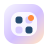

I01 消息
会话气泡、消息条、未读角标，强调沟通入口。
i-v03-01-message.svg
本版只参考两个优秀图标站点的规范能力，不复制具体图形：吸收 Remixicon 的网格纪律、清晰隐喻和稳定图形重心，也吸收 Magnific 的柔和高光、圆角材质和轻体积层次。所有图标仍围绕 Tappo 橙色品牌关系，保持清透、简约、可读、可落地。
消息入口必须明确是会话/消息，而不是普通通知点。
会话气泡、消息条、未读角标，强调沟通入口。
i-v03-01-message.svg
堂食、自取、外送必须严格区分：餐具 / 自提袋 / 配送车。
餐盘、叉和刀，表达店内用餐。
i-v03-02-dine-in.svg
手提袋和取餐标签，表达到店自提。
i-v03-03-pickup.svg
配送车、货箱和双轮，表达外送履约。
i-v03-04-delivery.svg
点餐方式是选择/切换入口，今日订座是当日预约日历与时间状态。
菜单卡、分支节点和选择关系。
i-v03-05-order-method.svg
日历、当日标识和时钟状态。
i-v03-06-today-booking.svg
主页、数据、应用、设置作为导航图标，结构要简洁、中心稳定、识别快。
房屋轮廓、门洞和主入口。
i-v03-07-home.svg
柱状图、洞察点和趋势高光。
i-v03-08-data.svg

四宫格模块和开通状态点。
i-v03-09-apps.svg
齿轮、中心孔和控制高光。
i-v03-10-settings.svg
提示、成功、失败需要语义强、颜色克制，并适合用于 toast、空状态和表单反馈。
警示三角和感叹号，表达注意。
i-v03-11-notice.svg
圆形状态、勾形和轻绿色确认。
i-v03-12-success.svg
圆形状态、叉形和轻红色失败。
i-v03-13-failure.svg
用户名、邮箱、修改密码、语言、消息通知按设置项语义绘制，避免互相混淆。
用户头像、身份底牌和状态点。
i-v03-14-username.svg
信封、折线和收件状态。
i-v03-15-email.svg
锁体、密码点和编辑笔。
i-v03-16-change-password.svg
地球、经纬线和语言切换关系。
i-v03-17-language.svg
消息气泡、提醒点和通知状态。
i-v03-18-message-notification.svg
服务协议、隐私政策、建议反馈、版本号偏设置页功能项，保持低调、可信赖。
协议文档、勾选条目和折角。
i-v03-19-service-agreement.svg
盾牌、锁孔和隐私保护状态。
i-v03-20-privacy-policy.svg
反馈气泡、编辑笔和输入条。
i-v03-21-feedback.svg
信息圆点、版本卡和状态条。
i-v03-22-version.svg